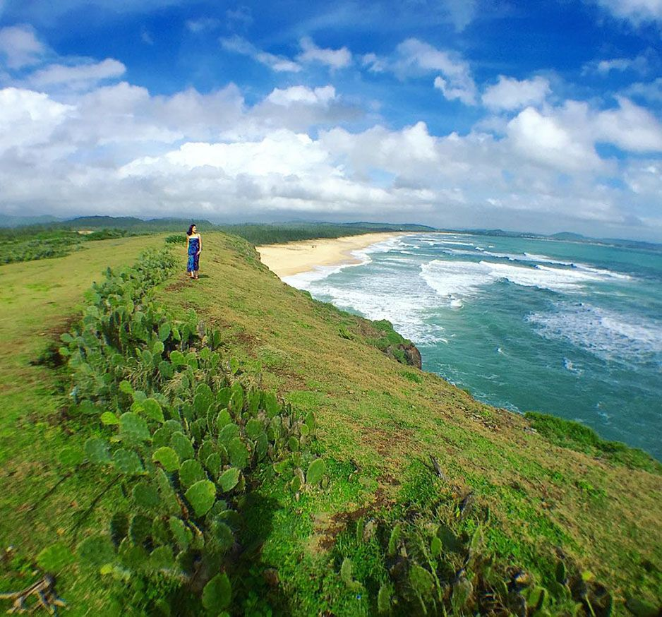

- Đăng nhập
- Đăng kí

Phú Yên, thành phố nằm ở miền Trung Việt Nam, là một điểm đến thú vị cho những người yêu biển và thiên nhiên hoang sơ. Với bờ biển dài, cát trắng mịn và nước biển trong xanh, Phú Yên hứa hẹn mang đến những trải nghiệm đáng nhớ.
Một trong những địa điểm nổi tiếng ở Phú Yên là Bãi Xép, một bãi biển đẹp hoang sơ và yên tĩnh. Du khách có thể thả mình vào biển, thưởng thức cảnh quan tuyệt đẹp và tận hưởng không khí trong lành của vùng biển Phú Yên.

Gành Đá Dĩa là một địa điểm du lịch nổi tiếng khác ở Phú Yên. Đây là một kỳ quan thiên nhiên với hàng nghìn tảng đá đen hình sấm chồng lên nhau, tạo thành một cảnh quan độc đáo và ấn tượng.

Du khách cũng không nên bỏ qua việc tham quan Đảo Mũi Điện, một hòn đảo nhỏ và hoang sơ nằm ở vịnh Vũng Rô. Đây là một điểm đến lý tưởng để tận hưởng không gian yên bình, ngắm cảnh biển và tham gia các hoạt động như lặn biển và câu cá.
Quay về đầu trang434/46/25E Bình quới, Phường 28, Quận Bình Thạnh, TP.Hồ Chí Minh
0917779407
phanminhhien0701@gmail.com